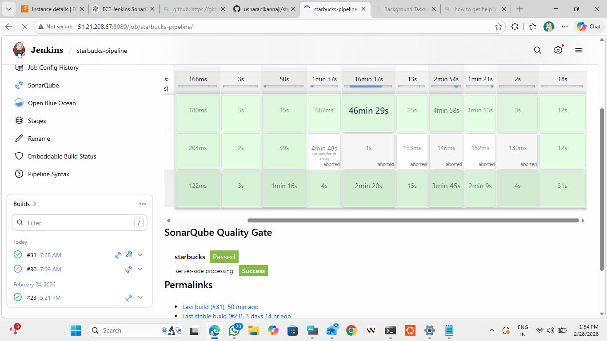
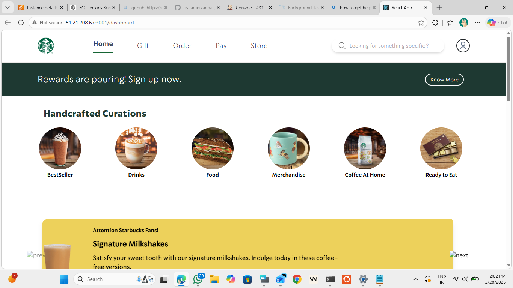
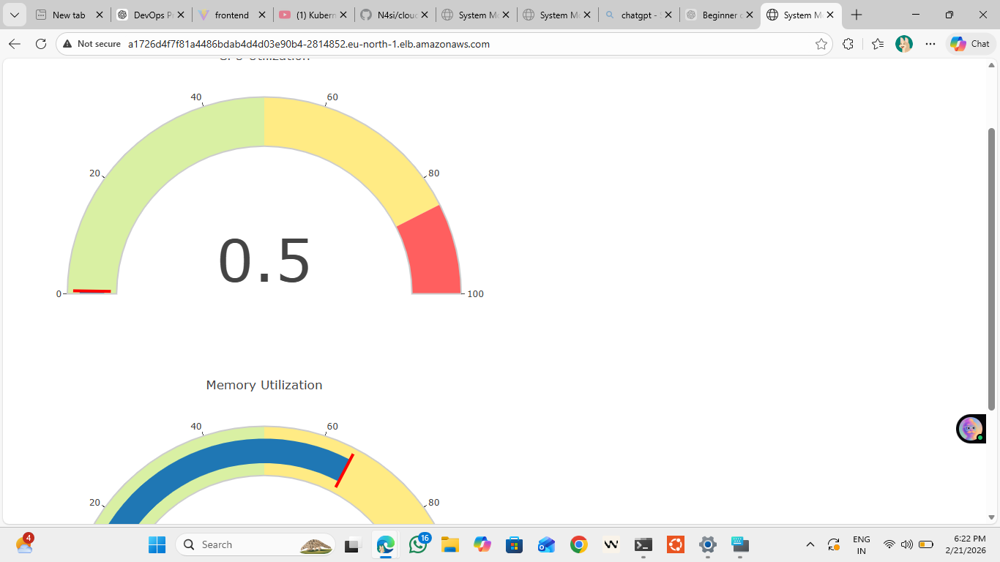
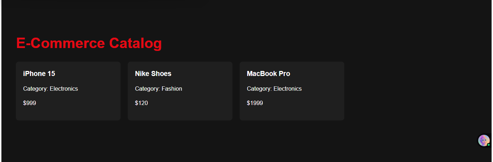
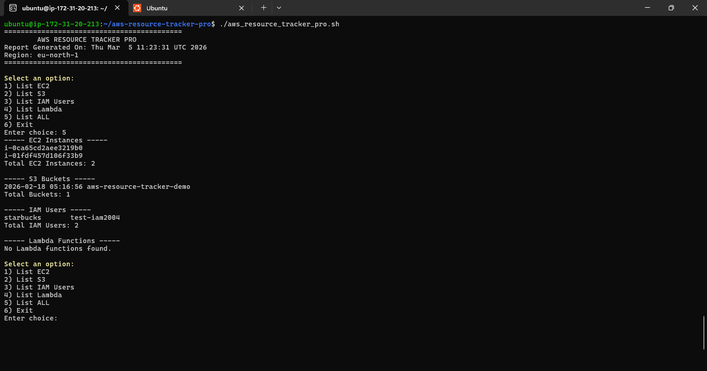

This project demonstrates a complete DevSecOps CI/CD pipeline for deploying a containerized Starbucks application using modern DevOps practices. The pipeline integrates Jenkins for continuous integration and delivery, Docker for containerization, Kubernetes for orchestration, and AWS EKS for cloud deployment. Security and quality were integrated directly into the pipeline using SonarQube for code quality analysis and Trivy for container vulnerability scanning. Monitoring and observability were implemented using Prometheus and Grafana to track application performance and cluster health. The goal of this project was to automate the entire software delivery lifecycle from code commit to production deployment while ensuring security, reliability, and scalability.


This project demonstrates deployment of a cloud-native application using containerization and Kubernetes orchestration. The application was developed using Python and Flask and containerized using Docker to ensure portability and consistency across environments. The Docker image was pushed to AWS ECR and deployed to a Kubernetes cluster running on AWS EKS. Kubernetes was used to manage container orchestration, scaling, and service exposure. The objective of this project was to build and deploy a scalable cloud-native application while implementing modern DevOps practices including containerization and cloud orchestration.

This project demonstrates deployment of an e-commerce catalog application using modern DevOps practices and cloud infrastructure automation. The application consists of a Spring Boot backend and React frontend containerized using Docker. Infrastructure provisioning was automated using Terraform, while Jenkins was used to build and deploy the application. Kubernetes was used for container orchestration and managing scalable deployments. The project highlights real-world DevOps practices including infrastructure automation, containerization, CI/CD pipelines, and cloud deployment.

AWS Resource Tracker Pro is a Bash-based automation tool designed to monitor AWS cloud resources using the AWS CLI. The script fetches information about key AWS services including EC2 instances, S3 buckets, IAM users, and Lambda functions and generates structured monitoring reports. The tool demonstrates DevOps automation practices by using Bash scripting to interact with AWS APIs through AWS CLI. It also supports cron scheduling for automatic execution allowing continuous monitoring of cloud infrastructure. This project highlights practical skills in Linux scripting, cloud automation, AWS resource monitoring, and DevOps operational tooling.
